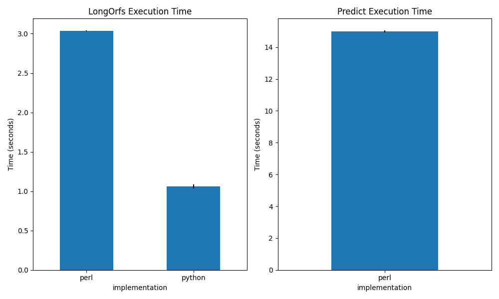
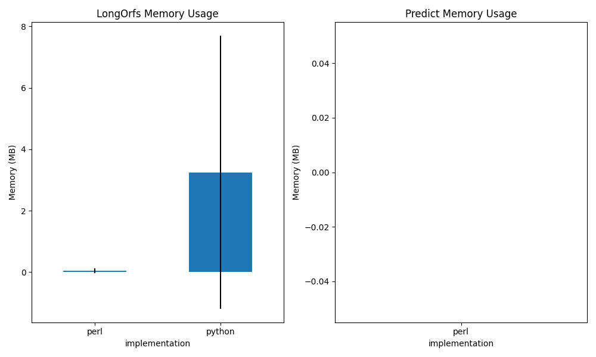
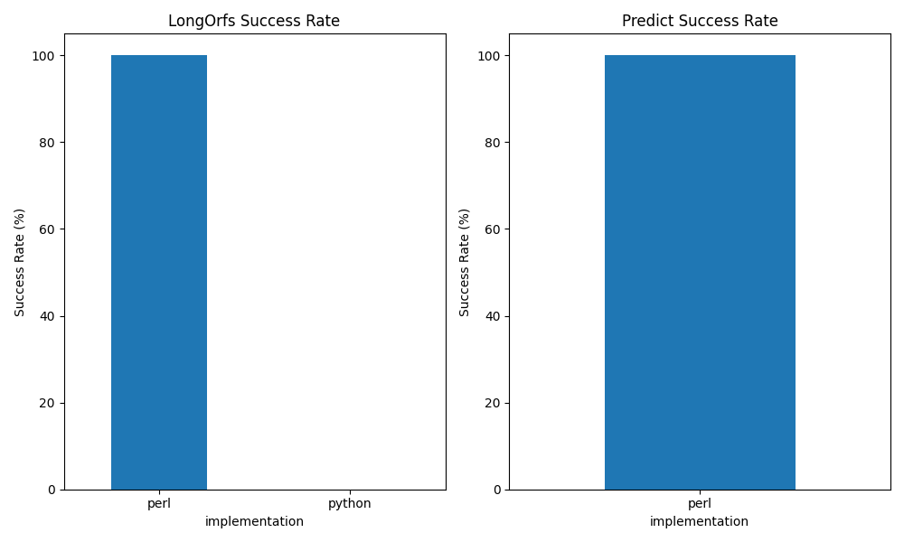

TransDecoder Benchmark Report
LongOrfs Phase
| Implementation |
Execution Time (s) |
Memory Usage (MB) |
Success Rate (%) |
| Perl |
3.03 ± 0.01 |
0.04 ± 0.07 |
100.0% |
| Python |
1.06 ± 0.02 |
3.25 ± 4.44 |
0.0% |



Summary
Performance Comparison: Python vs Perl
- Execution Time: Python is 2.86x faster than Perl for LongOrfs
- Memory Usage: Python uses 0.01x more memory than Perl for LongOrfs